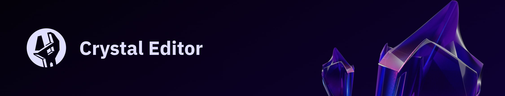

Buzzwords
#OPEN-SOURCE
La fondation Amethyst est orienté vers des projets Open-Source.
Le but est de rendre le projet accessible à un maximum de personnes tout en profitant des contributions de la communauté.
Cela permet au projet de se développer indépendamment.
#RUST
Le rust est un langage de programation compilé conçu et développé par Mozilla Research depuis 2010.
Conçu pour être : fiable, concurrent, pratique et supportatn les styles de programmations purement fonctionnel, modèle d'acteur, prodécural ainsi qu'orienté objet sous certains aspects.
#GAMEDEV
Le game dev (ou développeur de jeux vidéo en français), est une personne ou une entreprise qui crée des jeux vidéo en rassemblant plusieurs domaines de compétences comme le game design, la scénarisation, la programmation, l'infographie, la musique assistée par ordinateur, etc.
Il peut travailler au sein d'une entreprise, d'un collectif ou être indépendant.
#EDITOR
Un editor (ou environnement de développement, EDI en français ou IDE en anglais) est un ensemble d'outils qui permet d'augmenter la productivité des programmeurs qui développent des logiciels.
Il comporte un éditeur de texte (destiné à la programmation), des fonctions (permettant de démarrer le compilateur ou l'éditeur de liens), un débogeur en ligne (qui va exécuter ligne par ligne le programme en cours de construction).
Certains de ces environnements sont dédiés à un langage de programmation en particulier.
Dans un EDI, les outils sont prévus pour être utilisés ensemble. Ils peuvent être intégrés dès le départ, c'est-à-dire qu'ils sont construits dans le but d'être utilisés ensemble. Il peut aussi s'agir d'un ensemble d'outils développés sans lien entre eux et intégrés a posteriori.
#AGNOSTIC
On va parler ici de technologie agnostique. L'agnosticisme vient du grac "a", privatif, et "gnosis", qui signifie connaissance.
Dans le domaine numérique, c'est la capacité d'une ressource informatique à fonctionner avec tous les systèmes d'exploitation au sein desquels cette ressource est employée.
Plus techniquement, une technologie agnostique se rapporte à une ressource opérable au sein de systèmes distincts, donc indépendante de ces derniers.
On les trouve parfois sous les termes de logiciles "inter-plateformes" ou "multiplateformes".
La technologie agnostique permet à un logiciel informatique de s'adapter plus ou moins facilement en fonction des différents envirennements d'éxécution dans lesquels il opérera.
Pour donner quelques exemples plus parlants, un logiciel agnostique en termes de système, de plateforme (IOS? Android, Windows, ...) fonctionne avec n'importe lequel de ces systèmes d'exploitation.
Une technologie agnostique en termes d'équipements fonctione quant à elle sur plusieurs types d'équipements : oridnateurs fixes ou portables, smartphones, tablettes, ...
#AMETHYST
Il s'agit de la fondation avec laquelle les étudiants d'Epitech travaillent.
Ils sont à l'origine de l'engine Amethyst, ils sont aussi les principaux contributeurs à Rust, Tauri et Svelte et c'est grâce à leur collaboration que le projet Cristal Editor peut se faire.